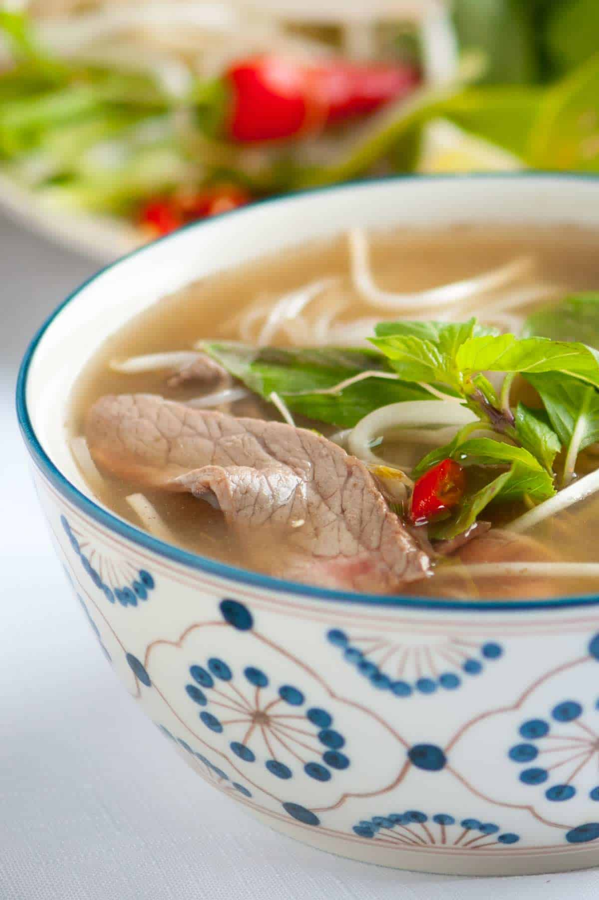

Basic Beef Pho Broth

You will need
- 5 to 6 pounds of beef knuckles or leg bones
- 6 quarts cold water
- 2 onions, quartered
- 4 inch piece of fresh ginger
- 2 cinnamon sticks, coriander seeds, fennel seeds, 6 whole star anise
Directions
- Place beef bones in a stockpot (10-quart or larger). Cover with cold water. Bring to a boil over high heat for 3 to 5 minutes. As the bones boil, scum and foam will float to the top. Drain the bones, rinse with warm water, and scrub the stockpot clean. Return bones to the pot and add 6 quarts of cold water.
- Preheat oven broiler to high. Line a baking sheet with foil. Place onion quarters and halved ginger on the baking sheet and broil for 10 to 15 minutes, turning occasionally until nicely charred.
- Place cinnamon, coriander, fennel, star anise, cloves, and cardamom pod in a dry frying pan over low heat. Toast for about 5 minutes, stirring occasionally, until fragrant. Transfer the spices to a muslin bag or cheesecloth and seal with twine.
- Bring the stockpot to a boil, then reduce heat to a gentle simmer. Add the charred onions, ginger, spice bag, salt, fish sauce, and rock sugar. Gently simmer uncovered for 3 hours, skimming off any foam that rises to the surface.
- Use tongs to remove bones, onions, and ginger. Strain the broth through a fine-mesh strainer. To remove the fat, skim it off with a spoon or refrigerate the broth overnight (the fridge solidifies the fat at the top, which is easy to remove in the morning).